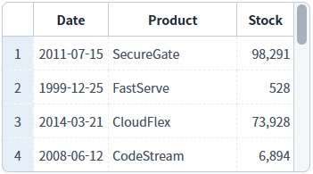
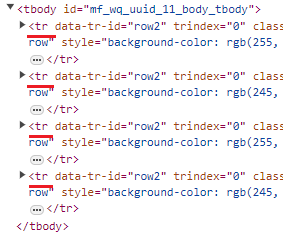
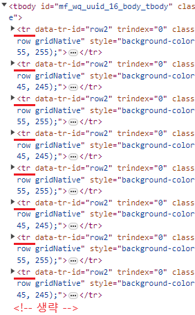
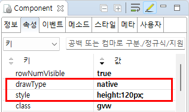

[GridView] 브라우저에 표현하는 방식 설정하기
1개요
GridView의 'drawType' 속성을 사용하여, GridView를 브라우저에 렌더링하는 방식을 설정한 예제입니다.
이 속성을 'native'로 설정하면, GridView와 연결된 DataList의 전체 데이터를 'table'로 렌더링할 수 있습니다.
2구현된 기능
(기본 설정) WebSquare 방식 (화면에 노출되는 영역만 table로 출력)
Native 방식 (데이터를 table로 모두 출력)
3예제 테스트 방법
각 영역에 표현된 GridView의 세로 스크롤 이동을 통해 비교할 수 있습니다. WebSquare 방식 : 세로 스크롤 이동 시 데이터만 변경됩니다. Native 방식 : tbody영역의 요소가 이동됩니다. 또는 브라우저의 [개발자도구]를 통해 만들어진 table을 비교할 수 있습니다.
3.1(기본 설정) WebSquare 방식(화면에 노출되는 영역만 table로 출력)
예제 영역 '(기본 설정) WebSquare 방식(화면에 노출되는 영역만 table로 출력)'에 구성된 GridView에서 테스트합니다.화면에 보여지는 행의 수는 4개의 행이 보여지고 전체 행의 수는 30개 입니다.
Image 1.브라우저(Chrome) 실행 예시 - GridView

브라우저의 개발자 도구를 사용하여 '요소'(Elements)를 확인합니다. GridView의 바디 영역에 구성된 'tr' 요소의 수가 4개이고, 세로 스크롤을 이동시키면 각 요소의 값이 변경되는 것을 확인할 수 있습니다.
Image 2.브라우저(Chrome) 실행 예시 - 개발자도구의 '요소'(Elements) 탭

3.2Native 방식 (데이터를 table로 모두 출력)
예제 영역 'Native 방식 (데이터를 table로 모두 출력)'에 구성된 GridView에서 테스트합니다.화면에 보여지는 행의 수는 4개의 행이 보여지고 전체 행의 수는 30개 입니다.
Image 3.브라우저(Chrome) 실행 예시 - GridView

브라우저의 개발자 도구를 사용하여 '요소'(Elements)를 확인합니다. GridView의 바디 영역에 구성된 'tr' 요소의 수가 30개로 전체 행의 수만큼 구성된 것을 확인할 수 있습니다.
Image 4.브라우저(Chrome) 실행 예시 - 개발자도구의 '요소'(Elements) 탭

4구현 예시
DataList 생성 및 연결은 생략되었습니다.
4.1Native 방식 (데이터를 table로 모두 출력)
GridView의 속성을 정의합니다.
[필수] drawType="native"
GridView를 브라우저에 표현할 때 전체(데이터의 행 수만큼)를 그립니다.
native : gridView 세로 스크롤 처리를 브라우저에 위임하므로 세로 스크롤이 움직임이 자연스러우며 데이터가 적은 경우 유리합니다.
virtual : 화면에 보이는 영역만 렌더링하므로 대용량 그리드에서 성능 유리합니다.
gridView Row별 height가 각각 다른경우 drawType="native"를 권장합니다.
[필수] style="height:120px;"
GridView의 높이값. (visibleRowNum 속성을 무시되므로 필수로 정의해야 합니다.)
Image 5.웹스퀘어 스튜디오의 Component View - 속성 설정 예시

Example 1.Source
<!-- gridView 의 소스 본문 예시 --> <w2:gridView drawType="native" style="height:120px;" dataList="data:dlt_books" > <!-- 중략 --> </w2:gridView>
5주요 API
drawType